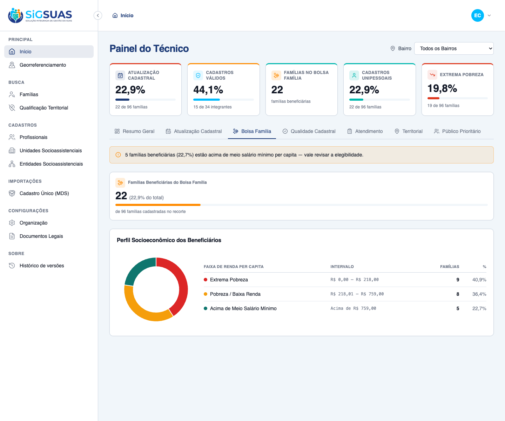
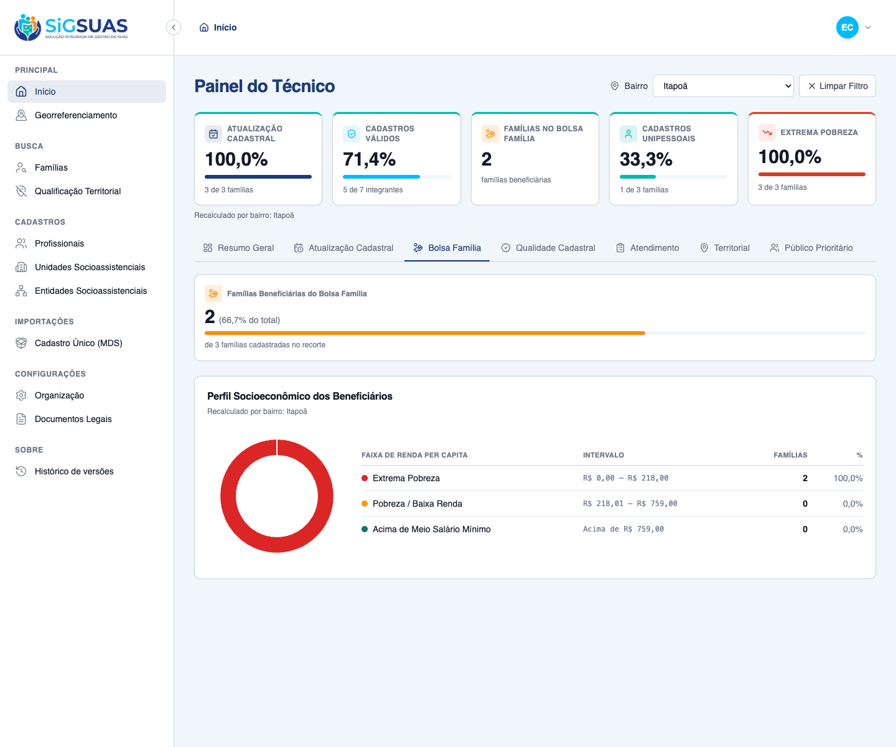

Relatório de Critérios de Aceite — Painel 3: Bolsa Família
Resumo
7 critérios evidenciados: 4 por navegador dirigindo o client real (CA05 perfil de renda dos beneficiários, RN05 cobertura + perfil, e o RG01 nas modalidades padrão/dinâmico/limpar) e 3 por suíte automatizada (partição + consistência com o KPI 3 da barra fixa, isolamento multi-tenant e gate de permissão). Todos atendidos. Suíte Pest do backend: 9 testes verdes (41 asserções).
| CA | Critério | Status |
|---|---|---|
| CA05 | Cruzamento de renda dos beneficiários (perfil socioeconômico) | ATENDIDO · navegador |
| RN05-cob | Indicador de cobertura (Famílias Beneficiárias) | ATENDIDO · navegador |
| RG01-a | Filtro global por Bairro — comportamento padrão ("Todos os Bairros") | ATENDIDO · navegador |
| RG01-bc | Filtro global por Bairro — recálculo dinâmico e "Limpar Filtro" | ATENDIDO · navegador |
| PART | Partição do perfil e consistência com a barra fixa | ATENDIDO · navegador + automatizado |
| ISO | Isolamento multi-tenant | ATENDIDO · automatizado |
| PERM | Gate de permissão (sem dashboard.view-indicators → 403 / painel oculto) | ATENDIDO · automatizado |
CA05 — Cruzamento de renda dos beneficiários (perfil socioeconômico) ATENDIDO · navegador
Critério (Gherkin): Dado que consulto o perfil do Bolsa Família (aba "Bolsa Família") Quando a tela renderiza o gráfico de perfil socioeconômico Então identifico quantas famílias beneficiárias do programa estão enquadradas em cada faixa de renda per capita (Extrema Pobreza, Pobreza/Baixa Renda e Acima de Meio Salário Mínimo).
Como foi testado: Login como Master, aba Bolsa Família. Leitura do gráfico de rosca Perfil Socioeconômico dos Beneficiários (Apache ECharts).
- O gráfico cruza os 22 beneficiários com as 3 faixas de renda: <b>Extrema Pobreza 9 (40,9%)</b>, <b>Pobreza/Baixa Renda 8 (36,4%)</b> e <b>Acima de Meio Salário Mínimo 5 (22,7%)</b>.
- A legenda detalha a contagem, o percentual e a faixa em R$ de cada grupo.

RN05-cob — Indicador de cobertura (Famílias Beneficiárias) ATENDIDO · navegador
Critério (Gherkin): Dado um recorte com famílias Quando o painel é calculado Então "Famílias Beneficiárias" = famílias com a marcação de recebimento ativo do PBF (contagem + percentual sobre o total).
Como foi testado: Cartão de cobertura no topo do Painel 3, no recorte municipal.
- Famílias Beneficiárias do Bolsa Família: <b>22 (22,9% do total)</b>, de 96 famílias cadastradas no recorte.

RG01-a — Filtro global por Bairro — comportamento padrão ("Todos os Bairros") ATENDIDO · navegador
Critério (Gherkin): Dado que acabei de carregar a aba "Bolsa Família" Quando nenhum bairro está selecionado Então o filtro inicia em "Todos os Bairros" E a cobertura e o perfil refletem a consolidação municipal.
Como foi testado: Ao abrir o dashboard, o filtro global (topo, à direita) inicia em Todos os Bairros.
- Filtro em "Todos os Bairros"; cobertura e perfil exibem a consolidação municipal (22 beneficiárias de 96).
RG01-bc — Filtro global por Bairro — recálculo dinâmico e "Limpar Filtro" ATENDIDO · navegador
Critério (Gherkin): Dado que o filtro global está em "Todos os Bairros" Quando eu seleciono o bairro "Itapoã" Então a cobertura e o perfil recalculam para as famílias do bairro (RN07) E ao acionar "Limpar Filtro" o painel volta à consolidação municipal.
Como foi testado: Seleção do bairro Itapoã no filtro global; um único evento recalcula a barra fixa E o painel (RG01/RN08).
- Recálculo instantâneo: cobertura 22 → 2 (66,7% de 3 famílias); barra fixa e painel exibem "Recalculado por bairro: Itapoã".
- O perfil recalcula (2 beneficiárias em Extrema Pobreza). O KPI "Famílias no Bolsa Família" da barra fixa também mostra 2 (consistência RN08).
- O botão "Limpar Filtro" retorna imediatamente à visão municipal (cobertura volta a 22, filtro a "Todos os Bairros").

PART — Partição do perfil e consistência com a barra fixa ATENDIDO · navegador + automatizado
Critério (Gherkin): Então extreme_poverty + low_income + above_half_minimum_wage = Famílias Beneficiárias E "Famílias Beneficiárias" é igual ao KPI 3 (Total de Famílias Bolsa Família) da barra fixa (#10184).
Como foi testado: Verificado na UI (9+8+5 = 22) e por testes automatizados (Pest) — ver apêndice.
- Na tela: 9 (Extrema Pobreza) + 8 (Baixa Renda) + 5 (Acima de Meio SM) = 22 (Beneficiárias).
- BolsaFamiliaTest: partição das 3 faixas e teste cruzado "beneficiaries == KPI 3" (RN08); não-beneficiárias excluídas do perfil.
ISO — Isolamento multi-tenant ATENDIDO · automatizado
Critério (Gherkin): Dado um usuário vinculado ao Tenant A Quando ele solicita o Painel 3 Então apenas famílias do Tenant A entram nos cálculos E um neighborhood_uuid fora do município do Tenant A retorna 422.
Como foi testado: Coberto por teste automatizado (Pest) — ver apêndice.
- DashboardBolsaFamiliaIsolationTest: famílias/beneficiárias do Tenant B nunca são contadas para o Tenant A.
- BolsaFamiliaTest: 422 para bairro fora do município do tenant.
Evidência por cobertura automatizada — ver Anexo.
PERM — Gate de permissão (sem dashboard.view-indicators → 403 / painel oculto) ATENDIDO · automatizado
Critério (Gherkin): Dado um usuário sem dashboard.view-indicators Quando ele chama o endpoint do Painel 3 Então recebe 403 (e o painel não é exibido).
Como foi testado: Coberto por teste automatizado (Pest) — o endpoint reusa o gate da barra fixa (#10184).
- BolsaFamiliaTest: operador sem o papel dedicado recebe 403; Master acessa sem add-on.
Evidência por cobertura automatizada — ver Anexo.
Anexo — Cobertura automatizada (Pest — BolsaFamilia + Isolamento)
PASS Tests\Feature\Dashboard\BolsaFamiliaTest ✓ it reports coverage and profiles only beneficiaries across the 3 in… 0.42s ✓ it reports zeroed coverage and profile without error when there are… 0.05s ✓ it excludes non-beneficiaries from the profile even when they share… 0.06s ✓ it reports beneficiaries equal to the strategic indicators KPI 3 (R… 0.06s ✓ it recalculates for a neighborhood, covering only geocoded benefici… 0.06s ✓ it returns 422 for a neighborhood_uuid outside the tenant municipal… 0.05s ✓ it denies the panel to the base operator without the dedicated role 0.04s ✓ it grants the panel to the Master without any add-on role 0.04s PASS Tests\Feature\TenantIsolation\DashboardBolsaFamiliaIsolationTest ✓ it never counts families from another tenant in the bolsa família p… 0.06s Tests: 9 passed (41 assertions) Duration: 0.91s